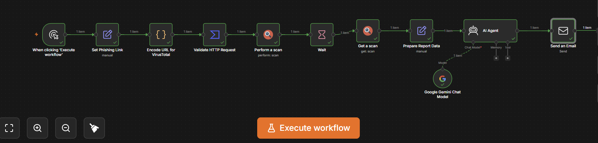
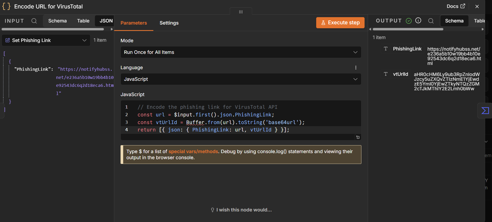
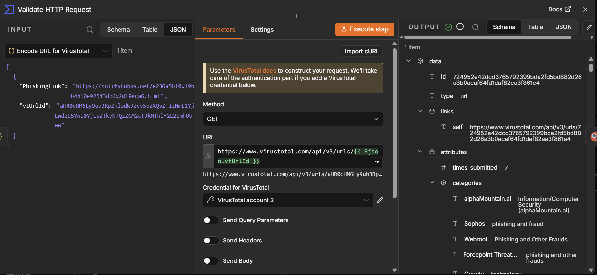
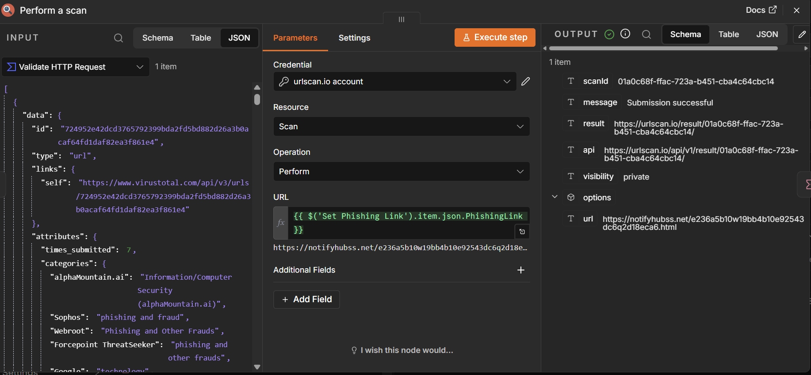
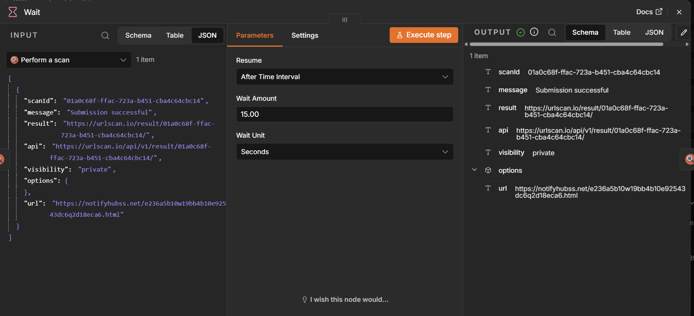
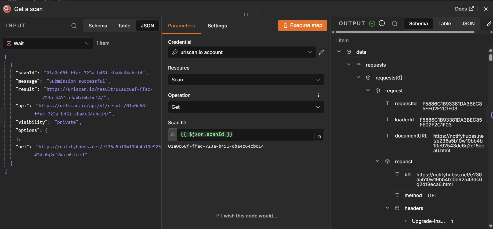
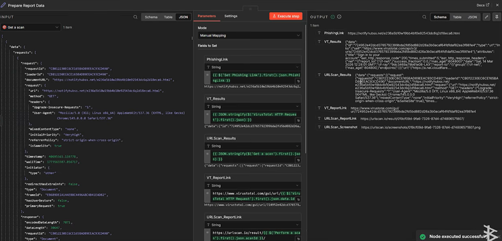
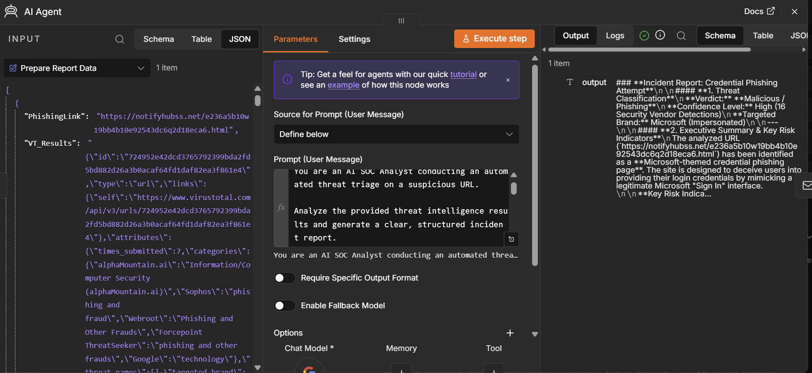
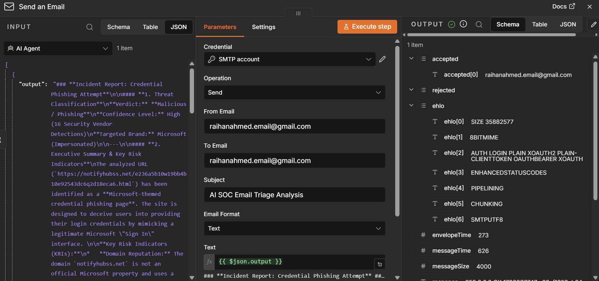

AI-Powered SOC Phishing Triage Agent
An AI-powered SOC workflow that analyzes suspicious URLs using VirusTotal and URLScan.io threat intelligence, normalizes security telemetry, and generates structured phishing triage reports with Google Gemini.
Project Overview
Phishing investigations often require analysts to gather information from multiple security sources before determining whether a suspicious URL presents a potential threat. This can include checking reputation data, analyzing webpage behavior, and identifying indicators associated with known brands or credential-harvesting pages.
I built this project to automate the initial collection and analysis of this security evidence. The workflow accepts a suspicious URL, retrieves threat intelligence from VirusTotal and URLScan.io, and prepares the resulting telemetry for analysis by an AI SOC agent.
The AI agent uses Google Gemini through a LangChain AI Agent node to analyze the collected evidence, identify key risk indicators, highlight potential targeted brands, and generate recommended SOC investigation actions. The final analysis is formatted into an HTML security report and delivered through email for analyst review.
Architecture & Tech Stack
Orchestration: n8n (Self-Hosted)
Threat Intelligence: VirusTotal API, URLScan.io
AI Model: Google Gemini
AI Framework: LangChain AI Agent
Workflow Logic: JavaScript / n8n Code Nodes
Output: Structured HTML security report
Notification: Email / SMTP
Workflow
The workflow connects threat intelligence collection, telemetry normalization, and AI-assisted analysis into a single investigation pipeline.
Suspicious URL
↓
URL Encoding
↓
VirusTotal Threat Intelligence
↓
URLScan.io Web Analysis
↓
Telemetry Normalization
↓
AI SOC Agent
↓
Threat Analysis & KRIs
↓
HTML Security Report
↓
Email Delivery
↓
Analyst Review
Implementation Phases
Phase 1:
Suspicious URL Input and Encoding
The workflow begins with a suspicious URL entered through the
n8n workflow. A JavaScript Code Node then prepares the URL for
VirusTotal by converting it into the URL-safe Base64 format
required by the VirusTotal API.

Phase 2:
VirusTotal Threat Intelligence
The encoded URL is sent to VirusTotal through an HTTP Request Node.
VirusTotal provides reputation and security intelligence that can
be used as evidence during the phishing investigation, including
vendor detections and URL classifications.

Phase 3:
URLScan.io Web Analysis
The workflow also submits the suspicious URL to URLScan.io for
browser-based analysis. URLScan.io can provide additional evidence
about the webpage and the infrastructure involved in the request.
Because the URLScan.io scan is processed asynchronously, the workflow waits for the scan to complete before retrieving the resulting analysis. This is handled using separate scan, wait, and get-scan steps in n8n.



Phase 4:
Security Telemetry Normalization
The results from the threat intelligence sources contain a large
amount of raw JSON data. Before sending this information to the
AI agent, the workflow prepares the relevant security evidence
into a more consistent structure.
This step allows the AI agent to focus on useful phishing indicators rather than processing unrelated API fields. Relevant evidence can include URL reputation results, classifications, webpage indicators, and potential targeted brands.

Phase 5:
AI SOC Agent Analysis
The normalized security evidence is passed to a LangChain AI Agent
powered by Google Gemini. The agent analyzes the available evidence
using SOC-oriented phishing triage instructions.
The analysis focuses on identifying key risk indicators, potential targeted brands, supporting evidence, threat characteristics, and recommended SOC investigation actions. The AI output is intended to assist an analyst with the initial investigation rather than replace analyst judgment.

Phase 6:
Automated Incident Report
After the AI analysis is completed, the workflow formats the results
into a structured HTML security report. The report contains the
investigation findings and recommended next steps so the output can
be reviewed by a security analyst.
The completed report is then delivered through the configured email node, creating a simple handoff from automated analysis to analyst review.

Example Investigation
To test the workflow, I analyzed a suspicious URL using the completed pipeline. VirusTotal identified multiple vendor detections and classified the URL as phishing/malicious.
URLScan.io provided additional webpage evidence, including indicators associated with a potential Microsoft-targeted phishing page and a password input element. Additional analysis showed Microsoft-related visual assets and suspicious JavaScript behavior.
The AI SOC agent used the combined evidence to produce a structured phishing assessment containing the threat classification, confidence level, potential targeted brand, key risk indicators, supporting evidence, and recommended SOC investigation actions.
Security Relevance
Phishing investigations often require analysts to correlate evidence from multiple security sources. This project demonstrates how threat intelligence APIs and AI-assisted analysis can be connected into a repeatable workflow for initial phishing triage.
The project is intentionally designed around analyst assistance. The AI agent analyzes the available telemetry and generates findings and recommendations, while final classification and response decisions remain with the security analyst.
The workflow demonstrates a basic AI-assisted security telemetry pipeline:
Suspicious URL
↓
Threat Intelligence APIs
↓
Security Telemetry
↓
Data Normalization
↓
AI SOC Agent
↓
Threat Assessment
↓
Structured Security Report
↓
Analyst Review